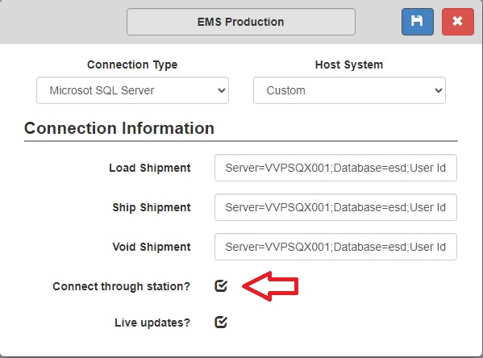

FAQ
Calls to the service desk should be answered prompty and by the third ring if possible. Inform them they've reached Shipstore software and give your name on answering the call. The first piece of information we need is whom we are speaking to and the organization they are part of. From there we can go to their page and see recurring issues. We can also then find tickets in Teamwork Desk for said client that are similar in nature. The next piece of information we'll need is what issue they are currently having. See below for further help with common issues.
Batch Processing
For issues with batch processing we will need the title of the Batch and the profile it is being attempted under. An important thing to remember for batch processing is if the customer with an issue is a private cloud customer or a public cloud customer or enterprise. The batch processing service resides on our cloud environment for public and private customers. One of the first things to attempt if running into issues is to reset the batch processing service within the cloud server. Clients should be not be voiding their batches unless the data that was loaded in is no good. Continous voiding of batches complicated the system, the desired workflow would be to attempt to reprocess when generating an error, or letting us work through the error.
Before refreshing the Batch service on the public cloud it may be fruitful to examine the BatchProcessing folder logs to see if we can capture a more descriptive error message for the development team.
Printing Labels
If the customer is having issues printing their labels the first thing we recommend to do is to reset the merchant app by exiting it and reopening it. Once that is done attempt to print a test page from the control panel, we need to make sure the OS can talk to the printer before Shipstore. Double check that the credentials used to get into the merchant app are the same used to login to the web application. Once those steps are taken make sure that the configuration of the station is done correctly. The Station name should match the computer's name and the printer name needs to match the printer name in the control panel. If this is a networked printer we need to include the // to indicate this is a networked printer. After that we can check to make sure the printer setup in the station is setup for the carrier being attempted and utilizing the right printer language.
Shipping Issues
If the customer is calling in about an issue when trying to load or process a shipment we'll need the following information.
- Order Number
- Shipment attempt timestamp
- Profile the Shipment is attempting
- When the issue event is happening? (Loading, Rating, Shipping, Consolidating etc.)
Once we have this information we can search the server logs for the shipment using the order number and when it was attempted. Most shipments go through common stages within the logs that can make the information easy to find. Shipments normally start with a LoadShipmen if coming from an integration. The next step normally clients take is to rate the shipment which creates a RateShipment thread in the logs. After this is normally a good time to grab the shipment JSON. You will know you are at the right spot if the ship JSON you are grabbing is after the Rateshipment and the first few values are not empty
NOTE: If the issue is occuring on ShipmentLoad, the information gathered will not have populated fields in the JSON other than maybe an order number and profile being used.
Loading/Saving
If the issue is happening on load or saving the shipment back to the client's integration take the following steps. First check the Shipping history screen to see if the shipment has already been processed, this could be the cause of the error. Our next step should be to inspect the integration being used. You can do this by going to Administration > Integrations. Then opening up the integrations by selecting the edit button. We can then tell if the client is using the merchant app to load and save shipments to and from Shipstore.
If the integration uses the Merchant app as the example above we need to request the merchant logs from the client to fully investigate. The Merchant logs are found at: 'C:\Logs\SHIPSTOREv4\Merchant'. If they are not utilizing the Merchant app then we will need to look into the server logs for more information as to what could be going wrong on shipment load or save.
Rating
If the issue is happening when attempting to rate a shipment we'll need the following information.
- Shipment Type: Parcel or LTL
- Ship To: Domestic or International
- Ship To: PO Box or an APO/FPO address
- Number of packages
- What carrier generates what error?
- What's the Ship Date?
- Is the shipper selecting any accessorials? (Saturday delivery, proof of delivery etc.)
Once that information is gathered we will also need the request and response attached to the ticket. These come at the end of the RateShipment if this is a Rateshop there will be a large quantity of these. The request is sent from us to the carrier and is normally in an XML format. The response comes back from the carrier and can be either in XML or JSON. If there is an error in the rating of a shipment it's normally contained in the response.